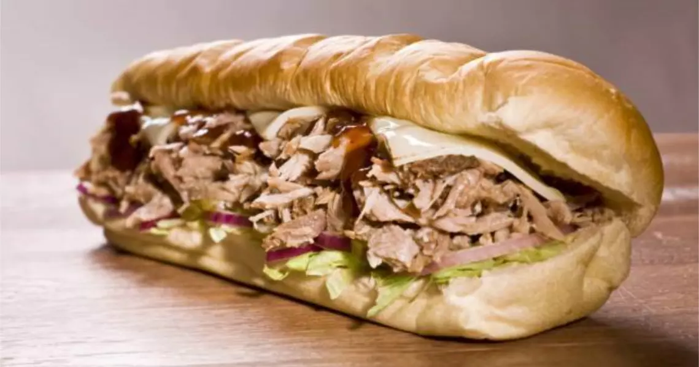
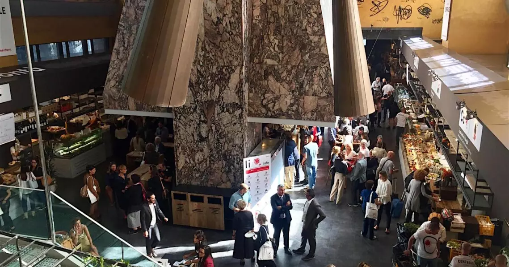
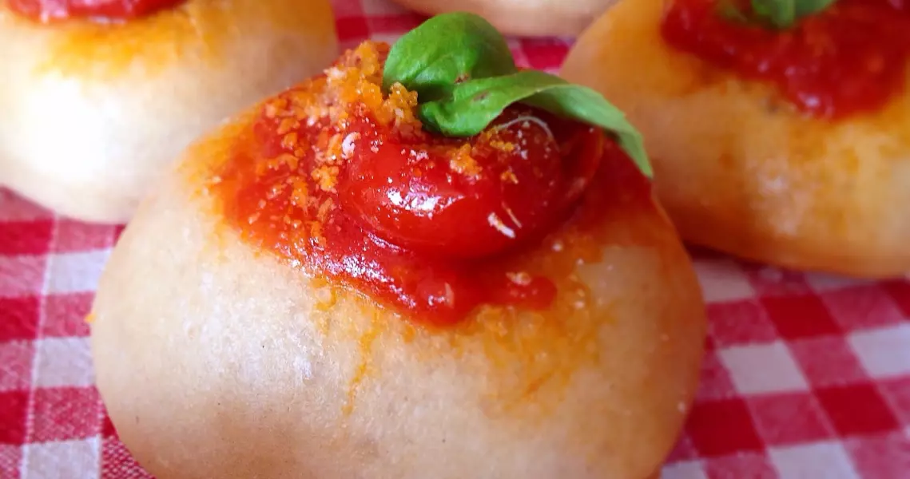
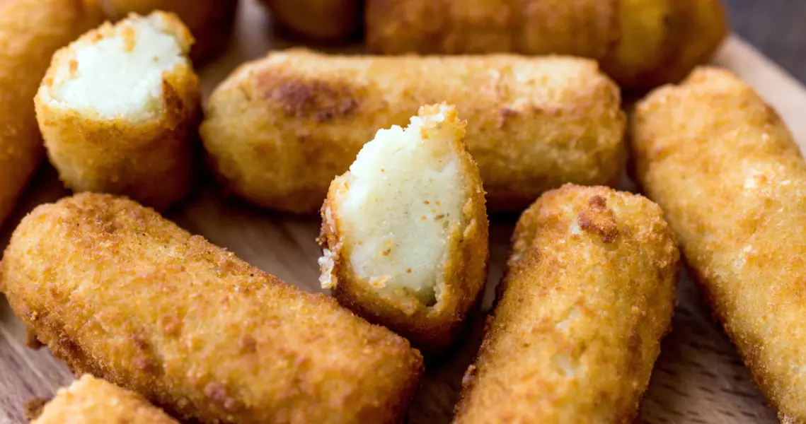
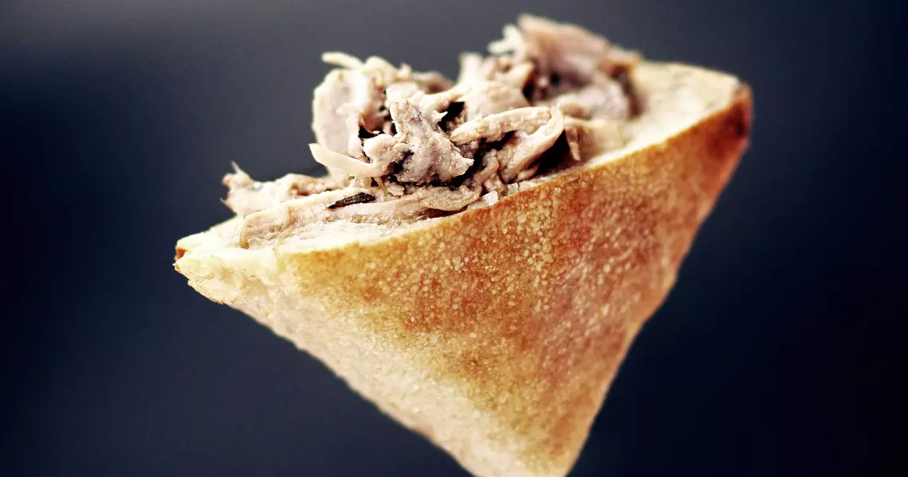

Lo street food romano

Lo street food romano è un'autentica festa per il palato, offrendo una miriade di prelibatezze che
riflettono la ricca tradizione culinaria della città eterna. Tra i piatti più iconici ci sono la pizza al
taglio, con la sua crosta croccante e una varietà di condimenti deliziosi, e i supplì, palline di riso
fritte con un cuore filante di mozzarella.
Non da meno sono i panini con porchetta, farciti con succulente
carne di maiale arrosto, o le frappe, dolci fritti che deliziano il palato durante il Carnevale. Il gelato
artigianale è un'altra delizia romana da gustare mentre si esplorano le strade della città. Prendetevi il
tempo per assaporare queste prelibatezze di street food quando visitate Roma, e lasciate che i sapori locali
vi conquistino.
Er buchetto
Ubicato nel cuore del centro storico, questo indirizzo storico è un tesoro apprezzato dai turisti in cerca di
autentica cucina romana da strada. Il suo piatto principale, il panino con la porchetta, è preparato con
maestria, utilizzando porchetta di Ariccia e ciriole, rispettando scrupolosamente la tradizione. Potete gustarlo
comodamente sul posto o portarlo con voi mentre esplorate le pittoresche strade del centro storico, magari
accompagnato da un bicchiere di vino dei Castelli. Un'esperienza culinaria romana da non perdere.

Mercato centrale
Da quando ha aperto le porte nella Cappa Mazzoniana, il Mercato Centrale ha costantemente ottenuto successi significativi.
Il suo format consolidato ha catturato l'attenzione del pubblico nella Città Eterna grazie a un'offerta diversificata e sempre
sorprendente. Qui troverai il celebre trapizzino, la pizza a taglio, ma anche ristoranti di alta
cucina nel mezzanino, come l'atteso arrivo di Davide Scabin, seguendo le orme di Oliver Glowig. Inoltre, puoi assaporare hamburger
di chianina, formaggi d'alpeggio, specialità siciliane, carciofi alla giudia e molto altro. Il Mercato Centrale a Roma offre un'ampia
varietà culinaria che soddisferà i palati più esigenti.

I Fritti de Sora Milvia
Questa rinomata friggitoria di via Cassia 4 è famosa per il suo delizioso supplì, un'icona dei fritti romani. Tuttavia, qui
troverai molto di più, poiché l'offerta culinaria si estende ben oltre. Puoi gustare deliziose polpette preparate con carne
bollita o baccalà, mozzarelle in carrozza, verdure croccanti, pizza con cicoria, frittura di mare con prelibatezze dal mare,
creme fritte e panzerotti. Naturalmente, il supplì è il protagonista indiscusso, e viene presentato in diverse varianti per soddisfare ogni preferenza.

Pastella
In questa raffinata friggitoria, l'attenzione alle materie prime di alta qualità è evidente in ogni piatto. Le preparazioni,
ispirate sia alla tradizione romana che a gusti internazionali, sono tutto tranne che banali. Dalle squisite polpette di bollito
a delle montanarine, arricchite con condimenti eccezionali, fino alle irresistibili crocchette e chips di patate, qui troverai
una vasta gamma di delizie fritte. Se desideri esplorare sapori internazionali, le arepas venezuelane sono un must. Inoltre, il
baccalà mantecato offre un'esperienza straordinaria per gli amanti del pesce fritto. Per accompagnare questi piatti prelibati,
c'è una selezione di vini naturali e birre artigianali. Se preferisci una proposta più ampia, La Cucina di Pastella nel quartiere
Pigneto offre un menu articolato e una ricca selezione di vini, mentre un'opzione più minimalista è disponibile al Mercato Centrale.

Pork'n'Roll
Oltre al rinomato pub situato al civico accanto, Pork'n'Roll offre una bottega che funge da autentica macelleria con cucina.
Qui, il fulcro è ancora una volta la carne di prima scelta proveniente dall'azienda agricola della famiglia Roccia in Puglia,
che si impegna per un allevamento rispettoso dell'ambiente. Presso questa bottega, puoi scegliere di acquistare le migliori carni
o gustarle direttamente sul posto. Le carni sono preparate in deliziosi panini o piatti prelibati. Inoltre, puoi deliziarti con i
salumi di alta qualità, privi di conservanti, e accompagnarli con birre artigianali di eccellenza.

Mercato di Testaccio
Questo è il principale gastromarket di Roma, un mercato che abbraccia due anime distinte: da un lato, è un punto d'incontro per la comunità
locale che apprezza una spesa fresca, stagionale e di alta qualità, con i suoi banchi di frutta, verdura, carne e pane. Dall'altro, ospita
botteghe moderne che offrono un'ampia varietà di street food.
Tutto ha inizio con Mordi e Vai, uno dei banchi più iconici del mercato, famoso per i suoi panini farciti con i classici sughi della tradizione
romana, come la carbonara, la trippa, la lingua in salsa verde e la vitella all'amatriciana. Non dimentichiamo le deliziose polpette di bollito
fritte, perfette per iniziare il pasto.
Ma qui troverai anche proposte vegane da Zoè, piatti preparati dalla rinomata chef Cristina Bowerman da gustare comodamente in tazze da passeggio,
supplì dal team di Dandini e l'ultima aggiunta, la pizza a taglio di Casa Manco, solo per citarne alcune. Questo gastromarket ha davvero qualcosa
da offrire per tutti i gusti.

Trapizzino
Trapizzino è un nome che non ha bisogno di grandi presentazioni. Questa creazione di Stefano Callegari ha conquistato il cuore degli amanti
dello street food, ed è ormai un'icona a Roma. Oltre ad affermarsi nella Capitale, Trapizzino ha esteso la sua presenza in America ottenendo un caloroso benvenuto.
Cosa rende il Trapizzino così speciale? Si tratta di un triangolo di soffice pizza bianca farcito con gustosi sughi, sia classici della cucina
romana che nazionale. Le opzioni includono il pollo alla cacciatora, la coda alla vaccinara, il picchiapò, la parmigiana di melanzane, il polpo
al sugo, e molte altre deliziose farciture tra cui scegliere.
Inoltre, non puoi perderti i supplì, che vengono offerti sia nella versione classica che in varianti creative che cambiano regolarmente.
Trapizzino ha quattro sedi in totale a Roma, distribuite a Ponte Milvio, Trastevere, Testaccio e Mercato Centrale. Se sei un amante della buona
cucina di strada, dovresti assolutamente dare una chance al Trapizzino.
